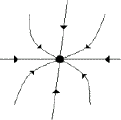
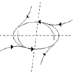
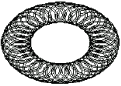

Selected excerpts
[preface | section 4.2 | section 10.0 | section 18.0 | section 22.0 ]
Preface (portion of):
The scientist does not study nature because it is useful; he studies it because he delights in it, and he delights in it because it is beautiful. If nature were not beautiful, it would not be worth knowing, and if nature were not worth knowing, life would not be worth living. Of course I do not here speak of that beauty that strikes the senses, the beauty of qualities and appearances; not that I undervalue such beauty, far from it, but it has nothing to do with science; I mean that profounder beauty which comes from the harmonious order of the parts, and which a pure intelligence can grasp.
--Henri Poincaré
A variation on an old joke goes as follows:
Engineers study interesting real-world problems but fudge their results. Mathematicians get exact results but study only toy problems. But computer scientists, being neither engineers nor mathematicians, study toy problems and fudge their results.
Now, since I am a computer scientist, I have taken the liberty of altering the joke to make myself and my colleagues the butt of it. This joke examines a real problem found in all scientific disciplines. By substituting experimentalist, theorist, and simulationist for engineer, mathematician, and computer scientist, respectively, the joke becomes generalized for almost all of the sciences and gets to the heart of a very real division.
A theorist will often make many simplifying assumptions in order to get to the essence of some physical process. Particles do not necessarily look like billiard balls, but it often helps to think in this way if you are trying to understand how classical mechanics says things should behave. Likewise, experimentalists often have to deal with messy processes that are prone to measurement error. So if a physicist finds that the surface temperature of an object is between 100,000 and 200,000 degrees, it doesn't matter if the units are Celsius degrees or Kelvin degrees, because the margin of error is orders of magnitude larger than the difference in the two measuring units.
A simulationist is a relatively new breed of scientist who attempts to understand how the world works by studying computer simulations of phenomena found in nature. A simulationist will always have to make some assumptions when building a computer model but will also find that the simulated results are not always a perfect match for what exists in the real world. Hence, the simulationist, having to incorporate principles from theory and experimental methodologies, straddles the fence and must deal with limiting factors found in both extreme approaches. But this is not always a bad thing.
Consider an economist who builds a simplified model of the world economy, runs the model on a computer, and reaches the conclusion that interest rates, unemployment, inflation, and growth will all reach a constant level at the end of the year and stay that way forever. For this one case, the simplified model tells us very little about how the real world works because the simplified model has failed to capture an important aspect of the real world. On the other hand, suppose that a simplified model is such that it never reaches equilibrium, turns out to be extremely sensitive to the starting conditions, and displays surprisingly complex behavior. Even if this model fails to make actual predictions about the real economy, it still has some predictive power since it may reveal a deeper truth about the inherent difficulty of predicting the economy or similar systems. In other words, the model is predictable in its unpredictability. Hence, if a simplified model can behave in a sophisticated manner, then it is not too great a leap to conclude that the real-world economy can display an even greater form of sophistication.
For the first case, if after simplifying a natural process we find behavior that is profoundly simpler than the original phenomenon, then it is likely that the model failed to capture some essential piece of the real-world counterpart. On the other hand, if an analogous form of complexity is still found even in a simplified model, then it is highly possible that a key feature of the natural system has been isolated. This illustrates that simulations---especially if they are simplifications---can yield insight into how things work in the real world.
All of this boils down to a simple but deep idea: simple recurrent rules can produce extremely rich and complicated behaviors. Pure theory often fails to make accurate predictions of complicated natural processes because the world does not always obey equations with analytical solutions. Similarly, experiments with complicated observations are often useless because they fail to bridge things from a reverse direction and correlate complex effects from simple causes. It is only through the marriage of theory and experimentation that many claims of the complexity of nature can withstand reasonable tests. Simulation, then, becomes a form of experimentation in a universe of theories. The primary purpose of this book is to celebrate this fact.
[preface | section 4.2 | section 10.0 | section 18.0 | section 22.0 ]
[preface | section 4.2 | section 10.0 | section 18.0 | section 22.0 ]
Section 4.2
Incompleteness versus Incomputability
While Turing's result on incomputability is concerned with the limitations of computers and Gödel's result is concerned with the limitation of mathematics, Turing's result is more general in that Gödel's result is a special case of it. This is because the notion of proof verification can be automated by a computer since any of the mathematical statements from the previous section can be implemented as programs. Therefore, asking the question “Is there a proof for a mathematical statement?” can always be reexpressed as “Does some program halt?”
Despite this fact, from a purely subjective and intuitive point of view, Gödel's theorem seems to be more profound because it is primarily concerned with the limitations of mathematics and, by implication, the limitations of mathematicians as well as other humans. On the other hand, some mathematicians, most notably Roger Penrose in his best-selling book The Emperor's New Mind, have taken Gödel's incompleteness result to be evidence that human minds do something that no computer could ever do. To paraphrase, the argument works something like this:
Looking at Gödel's statement, we know that it must undoubtedly be true, since if it is false, we reach a contradiction. You and I, being humans, were able to “leap” out of the formal mathematics to see the validity of Gödel's statement. This ability to see beyond mathematics demonstrates that in some ways, human thought is not only non-algorithmic, but also intrinsically more powerful than algorithmic processes.
Many scientists, philosophers, and mathematicians have pointed out that there are at least two problems with Penrose's interpretation of Gödel's incompleteness result. First, while Gödel's incompleteness result certainly implies that there are true mathematical statements that cannot be proven true---with [ Gödel's Statement ] being just one example---it does not necessarily follow that a computer cannot “see” the validity of a Gödel statement with any less certainty than we could. Why? Because, within predicate calculus, neither you nor I (nor anyone else) would be able to prove a Gödel statement. “Seeing” truth is not the same as proving truth. Nevertheless, Gödel did prove that the Gödel statement was true, but not in predicate calculus. His proof was in a formal system of mathematics that was slightly more powerful than the system he started out with. Let's denote the original system, predicate calculus, by the symbol P, and the system in which Gödel proved his incompleteness result by the symbol P'. Is P' immune to Gödel's incompleteness? Surprisingly, P' is also incomplete. We can prove this by using another formal system, P”, which is also incomplete (but provably so in P”'), and so on.
The second problem with the argument is that Penrose assumes that humans are both complete and consistent. If humans were somehow immune to Gödel's incompleteness, then (as computational systems) we would have to be either inconsistent or so computationally weak that self-referential statements could not be expressed. Either of these results would imply that humans are, at least in some ways, weaker than computers. But even if humans are consistent, we aren't immune to Gödel's incompleteness. This is illustrated by the following humorous scenario, which I quote, with some minor editing, from Peter Grogono [1]:
Imagine that we have an instrument with which we can examine Penrose's brain in great detail (a sort of souped-up interactive NMR scanner, perhaps). After some investigation, we find a neuron, G, with the following property: G is usually dormant, but if we tell Penrose that G is dormant, G promptly fires. Then there is a true fact (G is dormant) that Penrose can never know because, whenever he knows it, it is false. Furthermore, we can know this because we are “outside the system.”
It is unlikely that a neuron with this property exists. It is very likely, however, that there are some aspects of Penrose's brain's behavior that he cannot know, because knowing them would render them false. Thus Penrose is not exempt from Gödel's theorem.
Furthermore, consider the sentence “Penrose cannot truthfully assert this statement.” You and I can say this sentence without contradicting ourselves. But no matter how Penrose contorts himself, he cannot say the sentence without being inconsistent. Moreover, Penrose can “see” the validity of the statement, but he is helpless to express it truthfully, unlike us, because we are “outside” of the system that is Penrose.
[1] From a posting on the USENET newsgroup comp.ai.alife, dated September 29, 1995.
[preface | section 4.2 | section 10.0 | section 18.0 | section 22.0 ]
[preface | section 4.2 | section 10.0 | section 18.0 | section 22.0 ]
Section 10.0
Nonlinear Dynamics in Simple Maps
Chaos is the score upon which reality is written.
--Henry Miller
... it may happen that small differences in the initial conditions produce very great ones in the final phenomena.
--Henri Poincaré
Prediction is difficult, especially of the future.
--Mark Twain (also attributed to Niels Bohr)
In the previous book part we saw how natural physical structures could be described in terms of fractal geometry. In this book part we will be concerned with the related topic of chaos in nonlinear dynamical systems. A dynamical system can be loosely defined as anything that has motion, such as swinging pendulums, bouncing balls, robot arms, reactions in a chemical process, water flowing in a stream, or an airplane in flight. For each of these examples there are two important aspects that must be considered. First, we need to determine what it is about a dynamical system that changes over time. In the case of the pendulum, both position and velocity vary over time, so we would be concerned with the “motion” of both of these states of the pendulum. A less obvious example is found in a chemical reaction, where the “motion” can be found in the ratio of reactants to reagents, or perhaps in some physical aspect of the chemicals, such as temperature or viscosity. The second aspect of a dynamical system that we must be concerned with is in the collection of rules that determine how a dynamical system changes over time. Usually, scientists have a mathematical model of how a real dynamical system works. The model will typically have equations that may be parameterized by time and the previous states of the system. Sometimes these equations can be used to get an estimate of what the future state of a dynamical system will be. In this spirit, let's agree that the “motion” of a dynamical system is dependent on how the state of the system changes over time. Moreover, there must exist a set of rules that governs how a dynamical system in some state evolves to another state. We may not know what the rules are, but if a dynamical system is deterministic, a set of rules for the time evolution of the system exists independently of our knowledge of it.
There are many different types of motion that can be exhibited by a dynamical system. The simplest is fixed point behavior, which can be seen in a pendulum when friction and gravity bring the system to a halt. Most fixed points can be likened to a ball placed on top of a hill, which rolls downward until at some point the ball sits on a flat spot and has no momentum to carry it further.
The next simplest type of motion is known as a limit cycle or periodic motion, which involves movement that repeats itself over and over. A lone planet orbiting a star in an elliptical orbit is an example of a limit cycle. Some limit cycles are more complicated than others. For example, a child on a swing drives the motion of the swing by periodically rocking in beat with the natural frequency of the swing, much like an idealized pendulum. Now, if the child rhythmically swings one leg at a higher frequency, the motion of that leg will cause the motion of his or her body to subtly wobble back and forth. If it is timed accurately, the child may be able to coerce the motion into behavior that is more complicated than that of the planet, with his or her body moving back and forth along the main axis of the swing, and perpendicularly left to right in step with the leg.
A slightly more complicated form of motion is found in quasiperiodic systems, which are similar to periodic systems except that they never quite repeat themselves. For example, the moon orbits Earth, which orbits the sun, which, in turn, orbits the galactic center, and so on. In order for the combined motion of the moon and Earth to be truly periodic, they must at some future point return to some previously occupied state. But in order for that to happen, all of the individual motions must resonate, which means that there must exist a length of time that will evenly divide all of the frequencies. Figure 10.1c shows quasiperiodic motion as consisting of two independent circular motions that fail to repeat due to a lack of resonance.



(a) (b) (c)
Figure 10.1: Different types of motion: (a) fixed point, (b) limit cycle (c) quasiperiodic
Up until the last thirty years or so, almost every scientist believed that everything in the universe fell into either fixed point, periodic, or quasiperiodic behavior. The belief in a clockwork universe, as exemplified by the mathematician Pierre-Simon de Laplace [1], held that, in principle, if one had an accurate measure of the state of the universe and knew all of the laws that govern the motion of everything, then one would be able to predict the future with near perfect accuracy. We now know that this is not true, since science was mistaken in its assumption that everything is either a fixed point or a limit cycle. Chaotic systems are not just exceptions to the norm but are, in fact, more prevalent than anyone could imagine. Chaos is everywhere: in the turbulence of water and air, in the wobble of planets as they follow complicated orbits, in global weather patterns, in the human brain's electrochemical activity, and even in the motion of a child on a swing. In all of these cases the complicated motion produced by chaos prohibits predicting the future in the long term. On the other hand, phenomena that were once thought to be purely random are now known to be chaotic. The good news in this case is that chaotic systems admit prediction in the short term.
Chaos is related to the other topics of this book in many ways. The pathological nature of the incomputable functions from Part I is very similar to the unpredictability of chaotic systems. The motion of chaotic systems can be described by fractal geometry. There is also a hypothesis known as “computation on the edge of chaos” that will be relevant in the next book part when we study complex systems.
In this chapter we will be primarily concerned with getting an intuitive feel for how chaos works in a simple, discrete time, iterative system. The nice thing about the examples that we will be looking at is that the richness, diversity, and beauty of chaos are exhibited by a deceptively simple dynamical system.
[1] Laplace claimed that “given for one instant an intelligence which could comprehend all the forces by which nature is animated and the respective positions of the beings which compose it ... nothing would be uncertain, and the future as the past would be present to its eyes.”
[preface | section 4.2 | section 10.0 | section 18.0 | section 22.0 ]
[preface | section 4.2 | section 10.0 | section 18.0 | section 22.0 ]
Section 18.0
Natural and Analog Computation
A technique succeeds in mathematical physics, not by a clever trick, or a happy accident, but because it expresses some aspect of a physical truth.
--O. G. Sutton
What is important is that complex systems, richly cross-connected internally, have complex behaviours, and that these behaviours can be goal-seeking in complex patterns.
--W. Ross Ashby
I see the world in very fluid, contradictory, emerging, interconnected terms, and with that kind of circuitry I just don't feel the need to say what is going to happen or will not happen.
--Jerry Brown
Soap bubbles, the mechanism behind associative memory, and approximate solutions to combinatorial optimization problems all share a common trait. Let's start with soap bubbles. With some soap, water, a small circular wand, and a good gust of breath, you can create a large number of bubbles, limited only by the endurance of your diaphragm and the volume of your lungs. Now, in your mind's eye, slow down the process of how a single bubble is made. It starts with a thin film of soap-water stretched across the circular opening of the wand. You exhale a sufficient amount of air to force the film to expand outward. As the film expands, it envelops more and more of the air that you exhale, taking on an oval-like shape. Eventually, a combination of air pressure and surface tension forces the end of the expanding film near the wand to contract. The film collapses into a point and the bubble breaks away.
Here is the interesting part. When the bubble is first formed, it is not in the shape of a sphere. Instead, the bubble may contain imperfections, making it elongated along one or more directions. With an elastic snap, the bubble wobbles back and forth, expanding and contracting along different directions, to finally coalesce into a near perfect sphere. But why does the bubble seem to “want” to be in a sphere? Why doesn't it look like a cube, pyramid, or football? Like a rubber band, a film of soap-water can be stretched but, given the option, rubber bands and soap films will always “prefer” to be in an unstretched state. Moreover, within the interior of a soap bubble there is a constant volume of air. Putting these two facts together, we see that the soap bubble has two conflicting goals that it must come to terms with before it can reach a “relaxed” state: It “wants” to minimize its surface area so as to minimize the amount that it is stretched while simultaneously maintaining a constant volume. Among the countless number of shapes that one could imagine a bubble taking, there is exactly one form that minimizes surface area while preserving volume, and that shape is a perfect sphere.
Flash back to your first course in physics and to some of the dynamical system ideas from Part III. If energy is the potential for change, then placing a ball on the top of a hill results in a system in a high energy state; that is, if we slightly perturb the ball, it will roll down the hill, resulting in a low-energy system. Similarly, a soap bubble in any shape other than a sphere is in a high energy state. As the bubble changes from non-sphere to sphere shape, it may overshoot the desired goal and temporarily move in the wrong direction, just as a rolling ball can be carried beyond the low point of a valley to momentarily move uphill. Balls can temporarily move uphill as long as they have sufficient momentum to do so. Momentum is responsible for the wavy motion that a bubble experiences as well.
The total amount of energy in either of these two systems is the sum of the potential energy---the height of the ball or the “unsphereness” of the bubble---and the kinetic energy, that is, the momentum of the moving portions of the systems. With this definition of total energy, a dissipative system will always move from a state of higher energy into a state of lower energy, and it will never go uphill. The energy doesn't just disappear, however. Instead, it is transformed and moved outside of the system, usually as friction but ultimately as heat. So when we say that the bubble “wants” to be in the shape of a sphere and that it “prefers” to be unstretched, we are really saying that all systems tend toward low energy states as time goes by. The energy low point for the system is the “relaxed” state.
But what has any of this to do with associative memory and combinatorial optimization problems? The lowly bubble and the mundane ball both turn out to be useful metaphors for distributed dynamical systems that can compute interesting things. Recall that the bubble “wanted” to minimize its surface area. Surface area is not a property of soap-water molecules, but of an entire soap film. Yet each molecule in a soap solution interacts only with a relatively small number of neighboring molecules. Hence, a global property---surface area---is minimized by only local interactions. Similarly, global properties such as the collection of neural activations that compose a distributed memory or the solution to an optimization problem may emerge from only local interactions.
In the remainder of this chapter we will examine artificial neural networks with fixed synapses that can act as associative memories and find approximate solutions to combinatorial optimization problems. In each case, we will be able to use a formula to set the synaptic strength of the neural networks; hence, learning, that is, the process of adaptively changing synaptic strength based on experience, will not be covered in this chapter. After looking at the neural network models we will once again turn our attention to energy surfaces to see how all of these things are similar.
[preface | section 4.2 | section 10.0 | section 18.0 | section 22.0 ]
[preface | section 4.2 | section 10.0 | section 18.0 | section 22.0 ]
Section 20.1
Biological Adaptation
The property of adaptation, from an evolutionary point of view, is often described by the equation adaptation = variation + heredity + selection. This distillation of ideas, known as neo-Darwinism, differs from strict Darwinism by explicitly making reference to a method of heredity. Breaking the equation down into basic terms reveals some interesting connections between adaptation and the fundamental computational issues highlighted earlier. For example, variation, which refers to how individuals in a population can differ from each other, is crucial to the neo-Darwinist view since evolution operates on no single individual but on entire species. Variations, by definition, can be expressed only in terms of multiple individuals; thus, parallelism and spatial multiplicity are essential ingredients in the algorithm of evolution. Similarly, heredity can be seen as a form of temporal persistence. When children inherit traits from their parents in discrete chunks of information, the traits can be seen to be iteratively passed down a time line. Thus, we have both parallelism and iteration as fundamental pieces of the biological equation for adaptation.
Now if we lived in a world of infinite resources where every organism was guaranteed an opportunity to reproduce, then that would be the end of the story; you and I would not be here since evolution would never have occurred in our world. So it is perhaps ironic that we are indebted to the finiteness of the universe. With limitations on available resources, reproduction is far from a sure thing since more organisms will exist than can reproduce. This brings us to the often misunderstood term “survival of the fittest.” This phrase has been criticized as being a tautology since it is really equivalent to “survival of the survivors,” a nearly meaningless phrase. The problem here seems to be with the word “fittest,” which is usually associated with physical characteristics independent of the ability to reproduce. But by “survival of the fittest” we really mean “survival of the reproducers” and nothing more. As Richard Dawkins is fond of saying, you and I can proudly make the claim that every one of our ancestors---without exception---survived long enough to reproduce. This may be an obvious statement, but if we consider the number of organisms that did not survive long enough to reproduce, and consider the exponential number of descendants that could have been, then we can be seen as members of a truly exclusive club.
Our ancestors may have been strong, fast, clever, or even sexy, and “survival of the fittest” seems to refer to some of these traits, but in truth these admirable traits are secondary. What really counts in natural selection is an organism's ability to reproduce, and nothing else. If strength, speed, intelligence, and desirability happen to increase an organism's chances of reproducing, then these traits do indeed correspond to being “fit,” but only in the context of reproduction. In fact, “fitness” can often be associated with a trait that is maladaptive in the sense that the trait may actually decrease the functionality of an organism. An example of this can be found in the peacock's gaudy tail feathers, which can hardly do anything but decrease a peacock's ability in the daily business of survival, but are selective for survival solely because peahens find them “sexy,” in that they are indicators of a peacock's overall health and fitness.
Adaptation, natural selection, and evolution are indeed very strange things. This is especially apparent when one factors in how organisms can have a recurrent relationship with their environments. The concept coevolution refers to how two species can mutually adapt to one another in such a way as to have a circular relationship, with one species' influence on another ultimately returning to the first species in a feedback loop. We see this in the coevolution of predator and prey species, such as lions and gazelles. As lions became better hunters over the past several millions of years, they exerted selective pressure on the gazelles that they preyed upon, which had the effect of increasing the speed and elusiveness of future gazelles. This in turn made it harder for the lions to get a meal, turning them into victims of their own success. This phenomenon is often characterized as a biological arms race.
An even more elaborate and illustrative example is found in the coevolution of bats and moths. Bats use a form of sonar, known as echolocation, to locate moths to eat. To accomplish this, bats emit very high-frequency sounds that bounce off moths and other insects, giving them an estimate of the prey's relative location. The process is actually far more complicated than one would think, since the bat-emitted sounds are often thousands of times more powerful than the returning echoes; hence, bats have evolved a technique to filter out the most powerful sounds so that they can concentrate on the faint return signals. By itself, this form of navigation and target identification is an extremely impressive and creative feat of evolution. But moths have coevolved a defense in the form of a soft covering on their bodies and wings that absorbs the bat chirps. Bats, in turn, have evolved new chirp frequencies that can be used to identify moths' fuzzy coating. In response, the moths have enhanced their stealth technology and, furthermore, have come up with a jamming technique that involves emitting their own sounds to jam the bats' return signals. This is often coordinated with elaborate evasive maneuvers. As if that were not enough, bats have evolved an elaborate flight pattern that can overwhelm a moth's senses, and also periodically turn off their echolocation, making the jamming technique less affective. And so the arms race continues (Wesson 1991).
The point is that every species partially molds its own environment, which makes the boundary between the selector and the selected somewhat indistinct. Hence, in many ways, Earth as whole may be best understood and appreciated as one enormous complex adaptive system.
Wesson, R. (1991). Beyond natural selection. Cambridge, Mass.: Bradford Books/MIT Press.
[preface | section 4.2 | section 10.0 | section 18.0 | section 22.0 ]